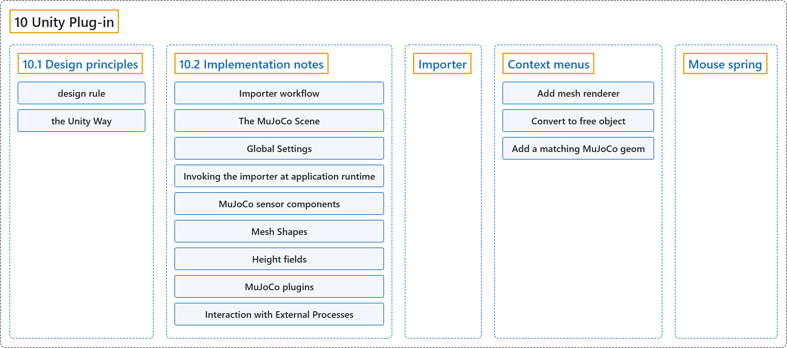

10. Unity Plug-in
Classification

Glossary
| Term | Definition | 中文翻译 | Source |
|---|---|---|---|
| 10 Unity Plug-in Unity 插件 |
"The MuJoCo Unity plug-in allows the Unity Editor and runtime to use the MuJoCo physics engine." | MuJoCo 的 Unity 插件让 Unity 编辑器和运行时能够使用 MuJoCo 物理引擎。 | Google DeepMind, n.d., "Introduction", para. 1 |
| 10.1 Design principles 设计原则 |
(context) "The plug-in design provides a one-to-one mapping between MJCF elements and Unity components." | （语境）插件的设计提供了 MJCF 元素与 Unity 组件之间的一一对应。 | Google DeepMind, n.d., "Design principles", para. 1 |
| 10.2 Implementation notes 实现说明 |
(No definition) | （无定义） | Google DeepMind, n.d., "Implementation notes" |
| Importer 导入器 |
"The importer is invoked from the Editor’s Asset menu: click on “Import MuJoCo Scene” and select the XML file with your model’s MJCF specification." | 导入器从编辑器的 Asset 菜单调用：点击“Import MuJoCo Scene”，再选择包含模型 MJCF 描述的 XML 文件。 | Google DeepMind, n.d., "Importer", para. 1 |
| Context menus 右键菜单 |
(No definition) | （无定义） | Google DeepMind, n.d., "Context menus" |
| Add mesh renderer 添加网格渲染器 |
"“Add mesh renderer” adds components to the same game object that render the geom:" | “Add mesh renderer”向同一个游戏对象添加渲染该 geom 的组件： | Google DeepMind, n.d., "Context menus", item 1 |
| MjMeshFilter MjMeshFilter 组件类 |
"a MjMeshFilter that creates a procedural mesh that is recreated when the geom shape properties change." | 一个 MjMeshFilter，它创建一个程序化网格，在 geom 形状属性变化时重新生成。 | Google DeepMind, n.d., "Context menus", item 1 |
| Convert to free object 转换为自由物体 |
"“Convert to free object” adds two new game objects: a parent with an MjBody component and a sibling with an MjFreeJoint component." | “Convert to free object”添加两个新的游戏对象：一个带 MjBody 组件的父对象和一个带 MjFreeJoint 组件的兄弟对象。 | Google DeepMind, n.d., "Context menus", item 1 |
| “world” geoms “世界”geom |
"This action only applies to “world” geoms – those that do not currently have an MjBody parent." | 这个操作只适用于“世界”geom，即当前没有 MjBody 父对象的 geom。 | Google DeepMind, n.d., "Context menus", item 1 |
| MjBody MjBody 组件类 |
(context) "“Convert to free object” adds two new game objects: a parent with an MjBody component and a sibling with an MjFreeJoint component." | （语境）“Convert to free object”添加两个新的游戏对象：一个带 MjBody 组件的父对象和一个带 MjFreeJoint 组件的兄弟对象。 | Google DeepMind, n.d., "Context menus", item 1 |
| MjFreeJoint MjFreeJoint 组件类 |
(context) "“Convert to free object” adds two new game objects: a parent with an MjBody component and a sibling with an MjFreeJoint component." | （语境）“Convert to free object”添加两个新的游戏对象：一个带 MjBody 组件的父对象和一个带 MjFreeJoint 组件的兄弟对象。 | Google DeepMind, n.d., "Context menus", item 1 |
| MjGeom MjGeom 组件类 |
(context) "For convenience, we provide a context menu for “freeing” a world geom (i.e., an MjGeom component without any MjBody ancestor) by adding a parent MjBody and a sibling MjFreeJoint." | （语境）为了方便，我们提供一个右键菜单，通过添加父 MjBody 和兄弟 MjFreeJoint 来“释放”一个世界 geom（即没有任何 MjBody 祖先的 MjGeom 组件）。 | Google DeepMind, n.d., "Tips to Unity users", item 2 |
| Add a matching MuJoCo geom 添加匹配的 MuJoCo geom |
"Right-clicking a Unity Collider offers the option to “Add a matching MuJoCo geom” to the same game object." | 右键点击一个 Unity Collider，会出现向同一个游戏对象“添加匹配的 MuJoCo geom”的选项。 | Google DeepMind, n.d., "Context menus", item 2 |
| Mouse spring 鼠标弹簧 |
"When the selected game object has an MjBody component, spring forces can be applied to this body towards the mouse cursor through a control-left-drag action in the Scene view." | 当选中的游戏对象带有 MjBody 组件时，在场景视图中按住 Ctrl 并左键拖动，就可以对这个刚体施加指向鼠标光标的弹簧力。 | Google DeepMind, n.d., "Mouse spring", para. 1 |
References
Google DeepMind. (n.d.). Unity Plug-in. MuJoCo Documentation (Version 3.17.0). Retrieved October 31, 2026, from https://mujoco.readthedocs.io/en/stable/unity.html